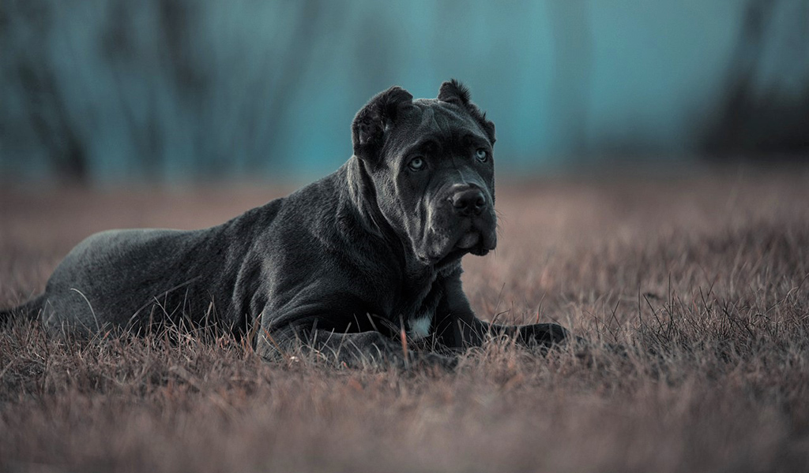

Американский бандог – питомец для сильных духом владельцев, желающих вывести свои умения дрессировки собак на кардинально новый уровень. Легко с бандогом точно не будет. Однако все сложности, связанные с обучением, с избытком компенсируются чувством защищенности и безопасности, которое способна обеспечить порода. Это та собака, с которой легендарный мем «Ты не пройдешь!» обретает буквальный смысл – попасть на территорию «американца» без угрозы для жизни и десятка рваных ран действительно невозможно.